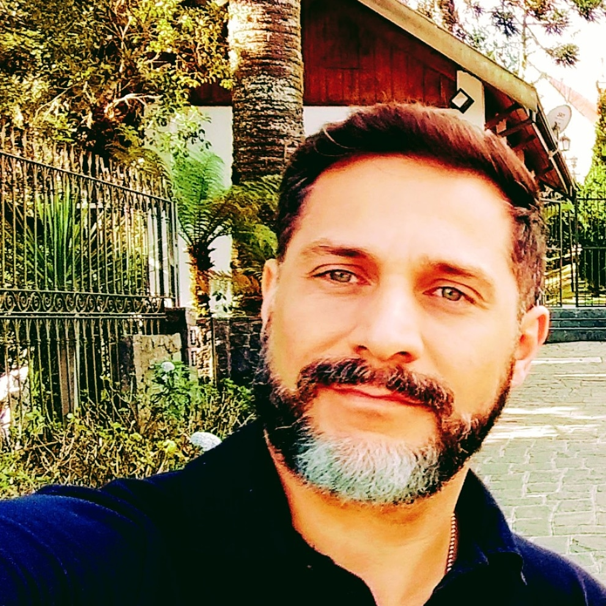

Portifólio de: Carlos Francisco da Rocha
Índice:

Foto: Carlos Rocha em visita ao Palácio Boa Vista,
antiga casa de veraneio do governo do estado de
São Paulo em Campos do Jordão - S.P.
Sobre Carlos Rocha:
Natural de Diadema - S.P, Solteiro.
Piloto de Linha Aérea, e apaixonado por técnologia
atualmente em transição de carreira para o T.I através
da Trybe. Ama a natureza, bater papo, gastronomia,
música e praia.
Habilidades:
- Comunicativo (a que mais gosto, rsrs);
- Gosto de aprender, e quando posso, também ensinar;
- Persistente;
- Criativo;
- Gosto de consertar coisas.
Links: